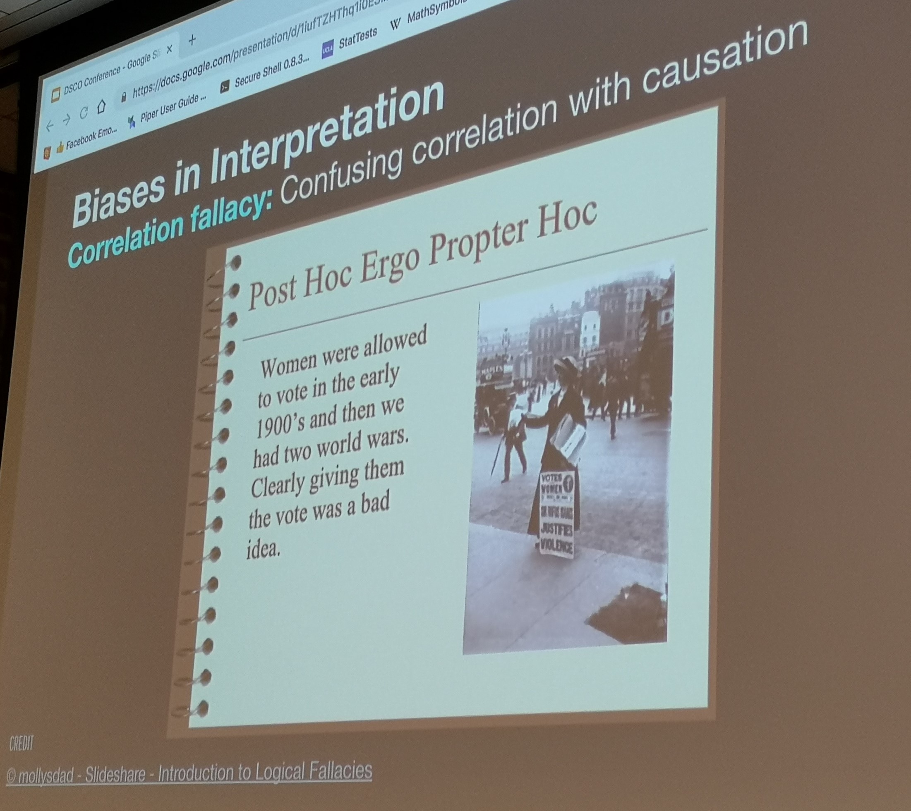
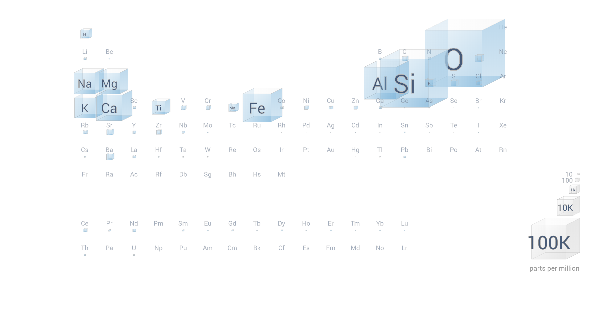
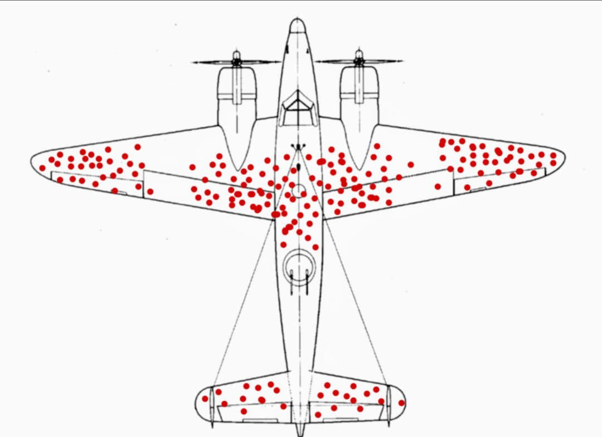
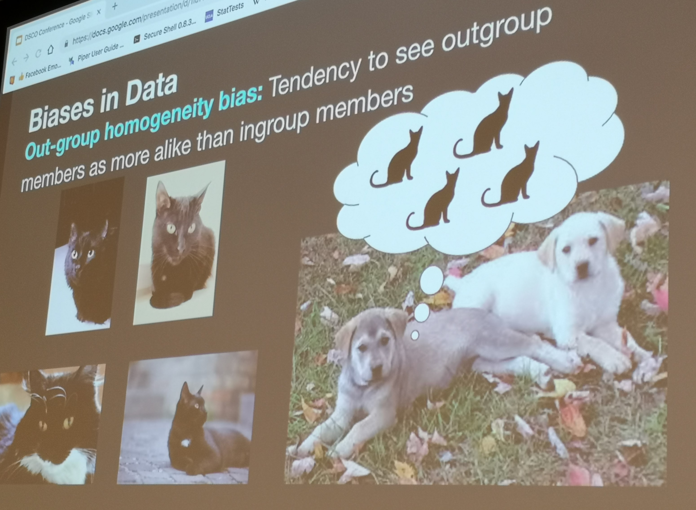

# Quiz https://djcordhose.github.io/ai/2019_quiz.html <!-- ## Täuschungen aus Wissenschaft, Statistik und Wahrnehmung --> <!-- <br> <br> #### <a href="http://zeigermann.eu">Oliver Zeigermann</a> / <a href="http://twitter.com/djcordhose">@DJCordhose</a> -->
### 12 Fragen ## Zwei Teams spielen gegeneinander ### Bei schnellen Antworten zählt die schnellste richtige, keine zweite Antwort möglich _Bildet jetzt Teams_
### Welcher Code funktioniert? w = tf.constant([[1.5], [-2], [1]], dtype='float32') x = tf.constant([[10, 6, 8]], dtype='float32') b = tf.constant([6], dtype='float32') y = tf.matmul(x, w) + b
### Was war die erste Millionen-Stadt? https://twitter.com/i/status/1107595419557740549 <small> https://observablehq.com/@johnburnmurdoch/bar-chart-race-the-most-populous-cities-in-the-world <br> https://flourish.studio/2019/03/21/bar-chart-race/ <br> https://twitter.com/mbostock/status/1108852672839315456 </small>
### Wie viele 5en? (die schnellste Antwort zählt) <img src='img/quiz/5s.png' class="fragment"> <img src='img/quiz/5s_bold.png' class="fragment"> <small> Theory of attention: https://static.googleusercontent.com/media/research.google.com/en//bigpicture/ML_Visualization_NeurIPS_Tutorial.pdf </small>
### Was ist das besondere an diesen Fisch, der gegen den Strom schwimmt? <img src='img/quiz/dead-fish-swims.gif'> <small> https://twitter.com/chubicki/status/1000457946734759936 </small>
### Emergenz Was ist auf diesem Bild? schnellste richtige Antwort gewinnt <img src='img/quiz/emergence_03.jpg' height="400px" class="fragment"> <small> https://eggbertsplace.github.io/principles-of-gestalt/#slide=4 <br> P. Sinha & T. Adelson (1997) </small>
### Logik <img src='img/quiz/implikation.jpg' height="500px"> <br> _Warum ist das ein schwacher Witz?_
### Info-Runde: Bias 1 
### Sequentielle Wahrnehmung #1 Wie viele? Die schnellste richtige Antwort gewinnt <img src='img/quiz/franconeri_test_1.jpg' height="450px" class="fragment"> <br> <small> https://twitter.com/SteveFranconeri/status/996309506425544705 </small>
### Wissenschaft _Welcher dieser vermeintlichen Fakten ist wissenschaftlich nicht belegbar?_ 1. Alkohol tötet Gehirnzellen 1. Glas ist eine sehr zähe Flüssigkeit 1. Wir stammen vom Affen ab 1. Wir nutzen nur 10% unserer Hirn-Kapazität <small> https://www.verywellmind.com/myths-about-the-brain-2794884 https://thebestschools.org/magazine/25-popular-science-myths-debunked/ </small>
### Welches ist das häufigste Element in der Erdkruste  <small> https://research.google.com/bigpicture/elements/ </small>
### Sequentielle Wahrnehmung #2 Wie viele? Die schnellste richtige Antwort gewinnt <img src='img/quiz/franconeri_test_2.jpg' height="450px" class="fragment"> <br> <small> https://twitter.com/SteveFranconeri/status/996309506425544705 </small>
### Rein Logisch betrachtet Ein Geschäftspartner kündigt an, mich überraschend nächste Woche an einem der Werktage um exakt 9 Uhr morgens anzurufen. An welchem Tag wird er anrufen?
### Statistik Im zweiten Weltkriegt zeigten von der US Navy untersuchte Flugzeuge hier Treffer durch Beschuss  _Wo würdest du die Panzerung verstärken?_ <small> https://twitter.com/ricfulop/status/1101976862325174276 </small>
### Wahrnehmung ist mehrdeutig Handtasche oder Dackel? schnellste richtige Antwort gewinnt <img src='img/quiz/purse_or_dachshund.jpg' height="400px" class="fragment"> <small> https://twitter.com/dumb_hannah/status/891678558841708544 </small>
### Statistik Nehmen wir an, 90% aller Statistiker sind schütern und nur 5% aller Verkäufer _Du triffst einen schüchternen Menschen, ist er eher Statistiker oder Verkäufer?_
### Info-Runde: Bias 2 
### Psychologie _Welcher dieser vermeintlichen Fakten ist wissenschaftlich nicht belegbar?_ 1. Power Posing (TED Talk von Harvard Psychologin Amy Cuddy) ist effektiv 1. Wir haben unterschiedliche Lernstile (Audio, Visuell, etc.) 1. Man kann Menschen in linke/rechte Gehirnhälfe-Typen einteilen 1. Männer kommen vom Mars, Frauen von der Venus <small style="font-size: large"> https://www.scienceofpeople.com/myths-pop-psychology/ <br> https://www.mindful.org/7-common-pop-psychology-myths-might-spreading/ <br> https://www.verywellmind.com/myths-about-the-brain-2794884 <br> https://hackspirit.com/scientist-debunks-10-popular-psychology-myths-people-believe/ </small>
### Sequentielle Wahrnehmung #3 Was und wie oft? Die schnellste richtige Antwort gewinnt <br> <small class="fragment"> _4x Abholer_ </small>